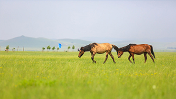
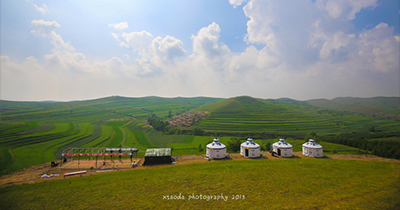
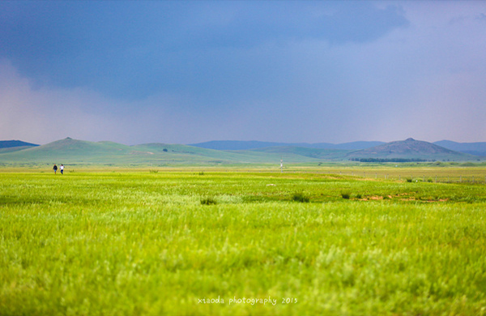
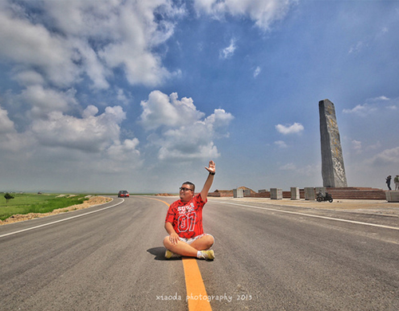
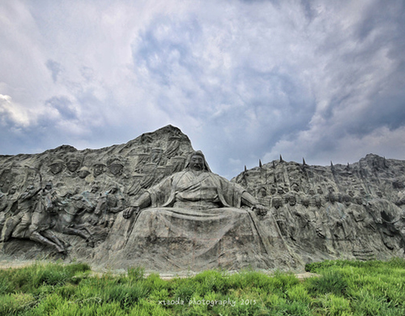

时间：2016.07
时间：2016.07
 天数：3天
天数：3天
 人均：500-1000（元）
人均：500-1000（元）
 张家口
张家口
张家口
有一天我遇到了世界
DAY1:草原天路，天边草原
草原天路 -张家口
DAY2:中都草原，美丽的草原日出
中都草原 -张北草原 -沽源坝上草原 -张家口
DAY3:元上都遗址，道不尽的蒙元史
元上都遗址 -锡林郭勒

D第一天
草原天路，天边草原
尽管天草原路只是张家口坝上草原的一条柏油公路，但海拔也有1000多米左右，深色柏油路与黄实线本身就是一条美丽的风景。百里之间，左右徘徊曲折，剧烈地跌宕起伏，静谧深远，仿佛带我们通向梦的彼岸。
续
草原天路周边还分布着桦皮岭、野狐岭、古长城等旅游景点。公路全长132.7公里，犹如一条蛟龙，盘踞于群山峻岭之颠，蜿蜒曲折、跌宕起伏，绵延百余公里。蓝天与之相接,白云与之呼应，行走在天路之上，就像是漫步在云端，故而得名“天路”。


D第二天
中都草原，美丽的草原日出
清晨起得早的话可以去欣赏草原日出，我看过很多日出，草原日出给我了另一种体验，当然我的运气有特别好，住一天就看到了草原日出，跟随我的脚步继续畅游草原吧！
续
中都草原位于河北张家口市张北县境内。中都是元代与大都（北京）、上都（开平）齐名的三都之一，是皇室宗族巡幸避暑胜地。中都原始草原是至今保存最完整的原始草原，纯美、壮阔、凉爽，是内蒙大草原的精华，是距北京最近、纬度最低的原始天然草原。
D第三天
元上都遗址，道不尽的蒙元史
出行请带好各类保暖物品，如羽绒服、暖水袋等。七月平均气温18.6度，最高气温35.4度。日照强烈，早晚温差大，建议携带好墨镜、太阳帽、防晒霜、润唇膏等物品。
续
元上都位于广袤的内蒙古自治区锡林郭勒盟正蓝旗草原，是世界历史上最大帝国元王朝的首都，始建于公元1256年。它是中国大元王朝的发祥地，也是蒙元文化的发祥地，忽必烈在此登基建立了元朝。“一座元上都，半部元朝史”。元朝的11位皇帝中，有6位皇帝是在上都登基。



选择用户头像：


评论内容为200字以内……
呀，呼伦贝尔，早上起来第一件事就是，再！去！一！次！敖！鲁！古！雅！实在是太喜欢这里了，充满着森林感的民族特色，还有神秘而温顺的鹿鹿。